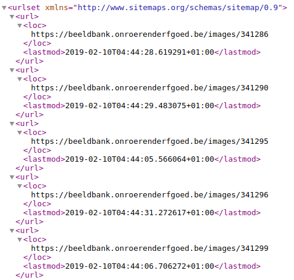
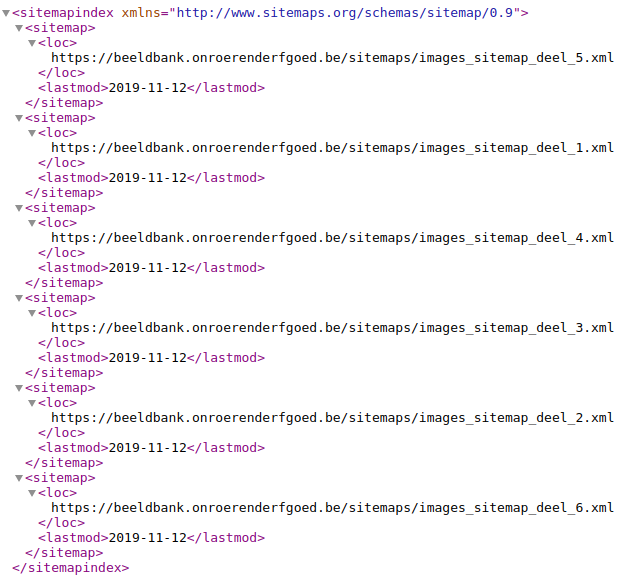

At Flanders Heritage we love maps! Almost all the heritage - I’m looking at you, heritage afloat - we’re dealing with on a daily basis is located somewhere. Quite a lot of our information systems have some geographical component in them and spatial data is part of our bread and butter. But sometimes, we also deal with maps that are not geographical in nature. Today, we’ll take a look at sitemaps. Just like regular maps, these have served us wel in helping people discover and find our heritage.
Sitemaps are simple XML documents that can be added to a webserver. These can then be read by search engines and indexed. Reading a sitemaps tells a search engine what webpages are present on your server. It’s essentially, a huge file full of links, with a suggestion for your favourite search engine to have a look at them. Recently we added one for our image database. This site publishes some 280.000 images of cultural heritage. Most of them taken by or for us. A large majority of those (some 233.000) can even be reused freely under an open data license. So, why did we add a sitemap and what have we gotten out of it?
To understand why they might be helpful, we have to understand how a search engine normally discovers and finds you website and webpages. This is done by a process known as crawling. The search engine acts a bit like a human surfing the web: it reads a webpage and indexes it (adds the page to an index if the page has enough relevant content) and then looks at all outgoing links. It follows these and repeats the process. While the actual process in deciding if and how a page gets indexed is more complicated, the mechanism for discovery of pages is quite simple. It means that, as long as a webpage is linked from at least one other webpage that is known by a search engine, it will eventually be analysed by the crawler. Off course, this is a rather slow process. It depends on some other site linking to your site and your site having good internal links. Since the web is huge these days, it might take a long time for crawlers to discover new pages and sites. Can’t we just guide these crawlers in discovering new stuff?
A few lines from a sitemap file for https://beeldbank.onroerenderfgoed.be
So the sitemap comes to the rescue! It’s a simple XML file that can contain all the individual webpages on your website. If you want to be nice to the crawlers you can add when a page was last updated. This helps the crawler decide if it should reanalyse a certain page or just ignore it for now. Since a website can be quite big, it’s possible (and for large sites unavoidable) to split your sitemap into several files. In that case, one file functions as the sitemap index and points to all the individual files. Everyone of those sitemap files may contain up to 50.000 webpages. Together the should give search engines a good idea what information might be found on your site.
The sitemap index file for https://beeldbank.onroerenderfgoed.be pointing
Once you have a sitemap file, you can let the searchengines know where it can be found. You can either submit these manually to a search engine or advertise the presence of the sitemap in a robots.txt file (a file that contains some hints for search engine crawlers on how to analyse your site). Once a sitemap is picked up by a search engine, the engine goes to work on the contents of the file. Analysing and indexing them. Depending on the search engine and the number of links it might take a few days or weeks before it’s fully up to date with all the pages on your site.
Off course, that’s nice in theory, but does it actually work? Compiling a sitemap file for a website with thousands of links can (and should) be automated, but it still requires some work. And nobody likes doing unnecessary work! Luckily for us, Google offers us some tools to check how it’s indexing your websites. We can see how many pages are present in the index, how many pages were considered but not accepted and which pages produce errors making it impossible for Google to index them. We can also check how often our site appears in search results and how often people actually click on those search result and actually reach our website.
Coverage for https://beeldbank.onroerenderfgoed.be before and after the sitemap was introduced (mid oktober)
If we look at the coverage our site has, we can compare the periode before we added the sitemap with the period after we added it. This graph clearly show that adding the sitemap quickly increased our coverage. We have not yet reached full coverage for the entire site. Currently some 220.000 pages are indexed. Google chooses how and when it indexes sitemaps, so we can’t predict how long it will take or if it will ever be completed. Ourr current observations are that it’s been stable ever since reaching the 220.000 mark, even with a slight downward trend. This seems to be caused by the cleanup of older links to systems that now redirect to this new image database, but the picture is not completely clear.
Search performance for https://beeldbank.onroerenderfgoed.be before and after the sitemap was introduced (mid oktober)
This next graph shows us how the site has been performing in search results after we added the sitemap and it was processed by Google. The site went from appearing between 200 and 400 times a day in search results to appearing 800-1200 times per day. This has also lead to an increase in clicks to our website. Where we use to have 5-10 people ckicking through every day, we are seeing between 30 and 40 new clicks. The relative percentage of people who click through hasn’t really changed, but off course the absolute numbers have.
As we have seen, creating a sitemap is a bit of work, but it’s an investment that yiels a good return. It increases your site’s visibility in search results tremendously. So, give it a go and add a sitemap to your site. Let us know if and how it worked for you.